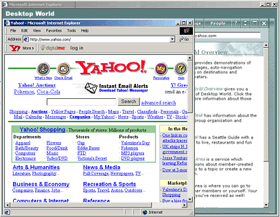

To surf the World Wide Web while visiting Desktop World, use the built-in browser, Microsoft Internet Explorer 5.0.
When browsing the Web from Desktop World, the browser appears in a separate window in front of the Desktop World application.

You can go to any available Web page by typing an address into the Address box and pressing ENTER. The Back button is used to return to a previous Desktop World page. After moving to a previous page using the Back button, you can use the Forward button to return to the Desktop World page you were visiting.